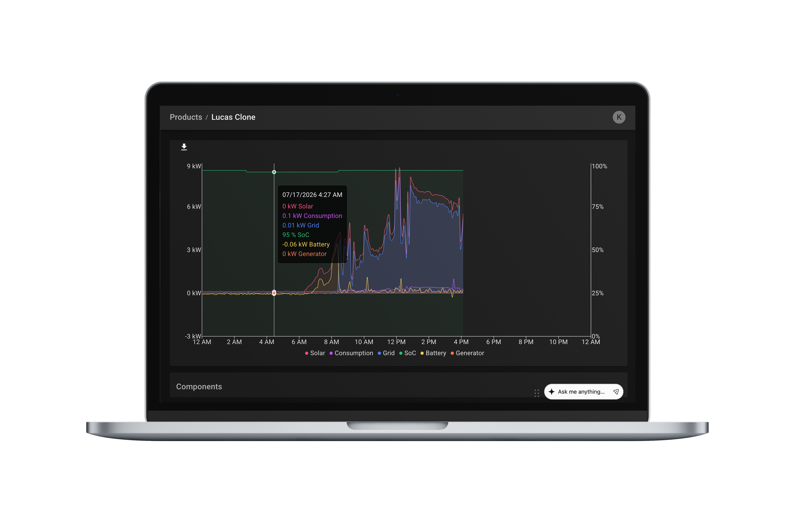

Strategically Building An App to Increase Product Value
Lion Energy


Lion Energy's previous residential energy tracker could not keep up with competitors.



Lack of Intuitive Functionality
The platform lacked intuitive functionality, resulting in a high-friction user experience

Non-Engaging Visuals
Visuals were not engaging and failed to showcase physical products during sales pitches

Divided Integration
Product integration was divided across platforms, with some available only on mobile and others only on web

Limited Control Over System
Customers had limited connection to and control over their systems after purchase
It was vital that this app act as a bridge between Lion Energy and partners to ensure revenue-driving products reached customers.
“The redesign and experience is simple and straightforward. People will not get lost in this app like they do on the old digital product.”
Sanctuary Customer Support TechnicianDiscovery
To design effective solutions I avoid jumping to conclusions before developing a proper understanding of both business and user needs. For this project I conducted a deep dive into 7 research avenues.
Research Avenues


Research Findings
Customers did not feel "in control" of their energy system because of their low confidence in the ability to read the data being presented to them.
of Customers Reported Less App Usage Over Time
This is an issue because partners/investors correspond high app usage to a successful app.
Increase in Sanctuary Sales Within the 1st Month of Release
Showcasing the direct business impact of the redesign on product sales and partnerships.
of Users Viewed the Web App on a Mobile Device
Mobile clearly was the preferred platform, so our product strategy should be built around it.
Implementation
From this research I brainstormed probable features that could act as solutions. I presented a feature map to the developers. We evaluated project needs and assessed team bandwidth defining an MVP that would maximize impact within constraints.
We decided that an effective product would deliver:
- Simplified intuitive energy data visualization
- Actionable insights rather than uninterpreted raw data
- Customization to give users greater control
- A modern brand-aligned UI for a seamless experience between digital and physical products


Testing
We had found during initial research, most users' confusion stemmed from a central graph depicting the movement of energy throughout a home and system. It was complex, showing 8 overlapping data points with varying values and vague labels.
To address this, I designed a new graph that simplified these 8 data groups down into 2 focusing on increasing comprehension. I then created a prototype and developed an A/B testing plan.
Users were recruited via email, and testing was conducted over Zoom. The prototype that was tested maintained a consistent visual style to old graph. This ensured that any differences in user performance could be attributed solely to changes in data presentation.


An app on track to complete business partnerships through competitive features validated by research.
Competitive Features
Looking back on this project, there are several lessons I learned to carry forward into future work.
What Went Well
- Depth and variety of research sources
- Strong alignment between user needs and business goals
- Transforming a technical feature (graph) into a strategic asset
What Could Have Been Better
- More time to iterate on the design before launching
- Lost key team players in the middle of launch
- Removed some features customers preferred for a more flashy design (replaced after initial launch)
Key Takeaways
- Know who your true customer is, it might not be the end user
- Thorough research strengthens every stage of product development
- Build buffer into launch schedules and invest in developer collaboration
Say hey!
Working on something exciting? Let's connect! I would love to hear about it!
Contact